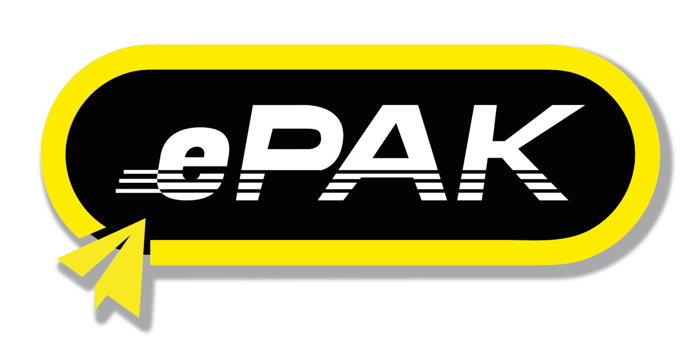
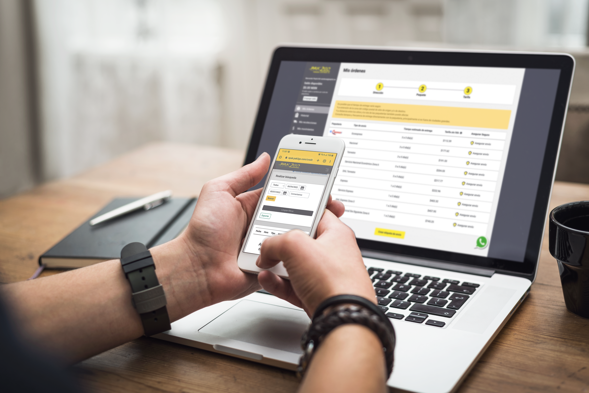
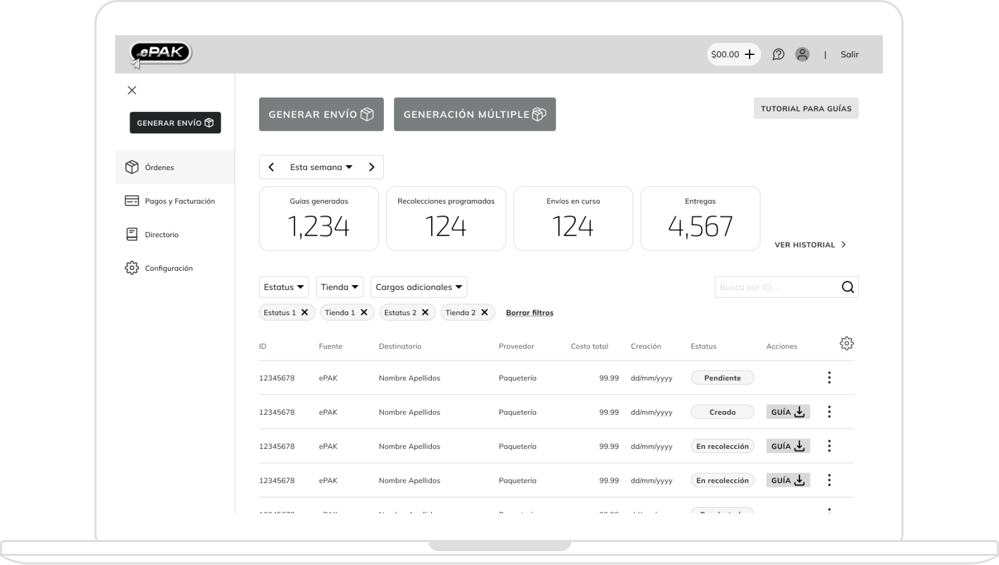
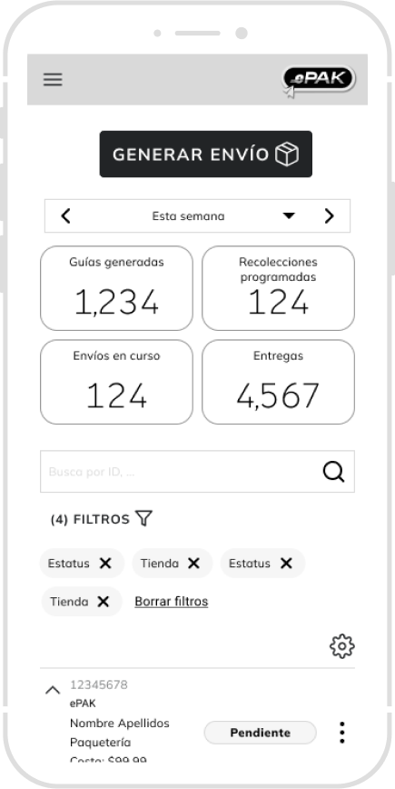
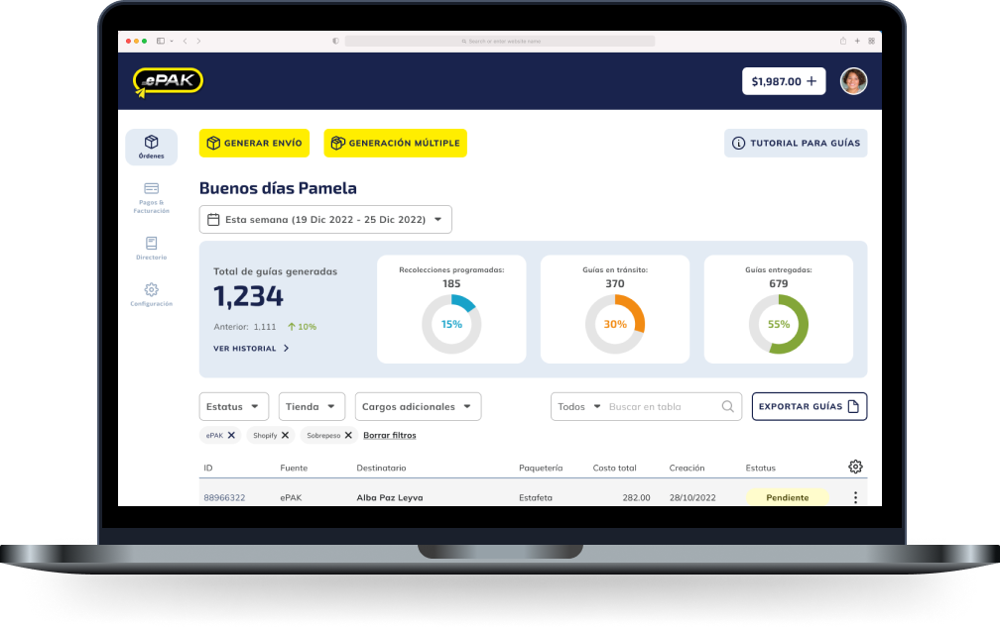
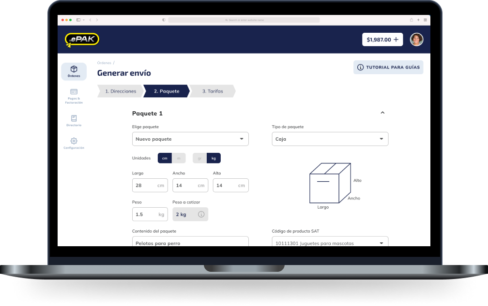
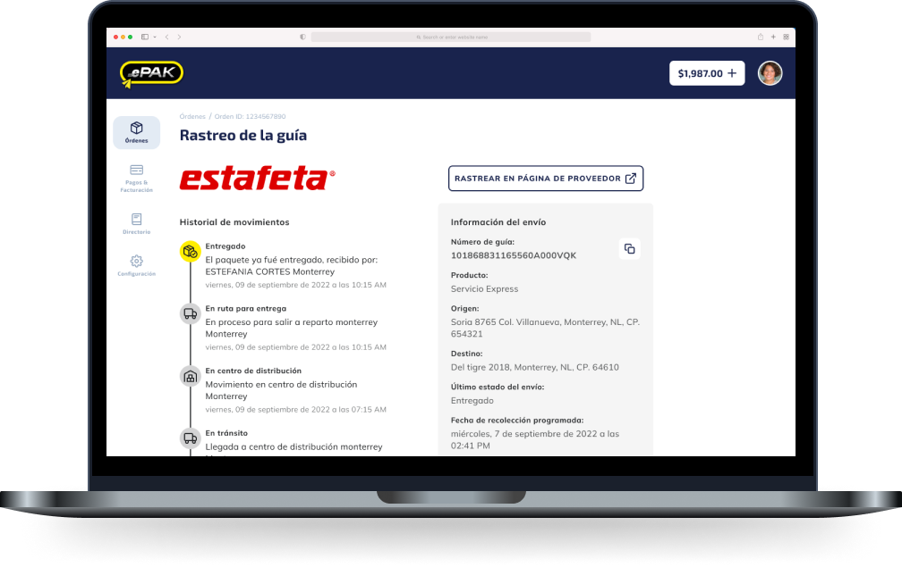
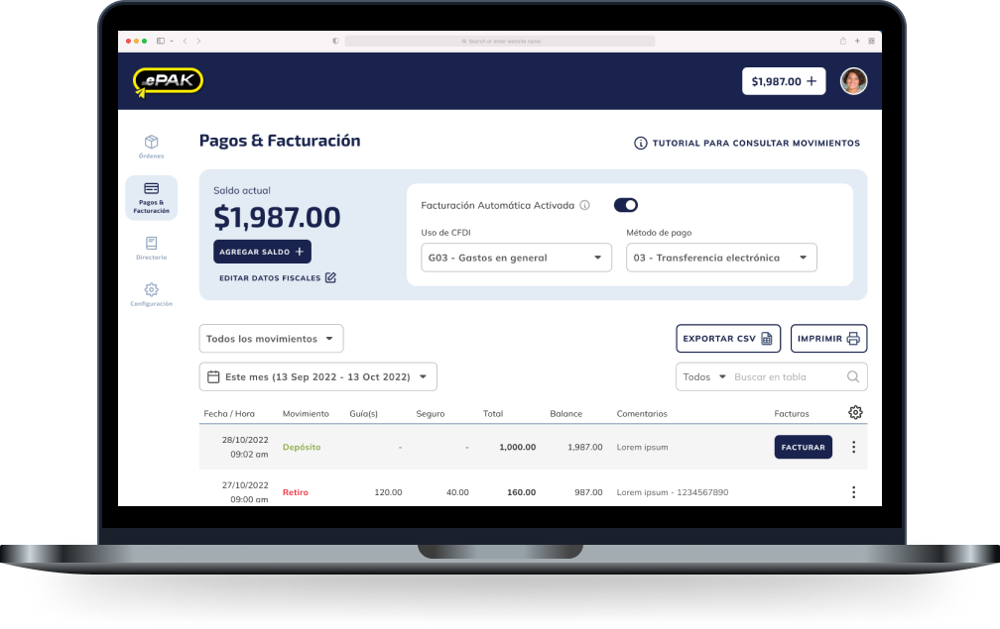
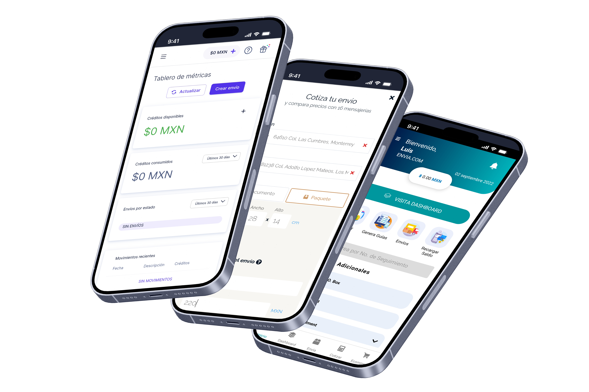
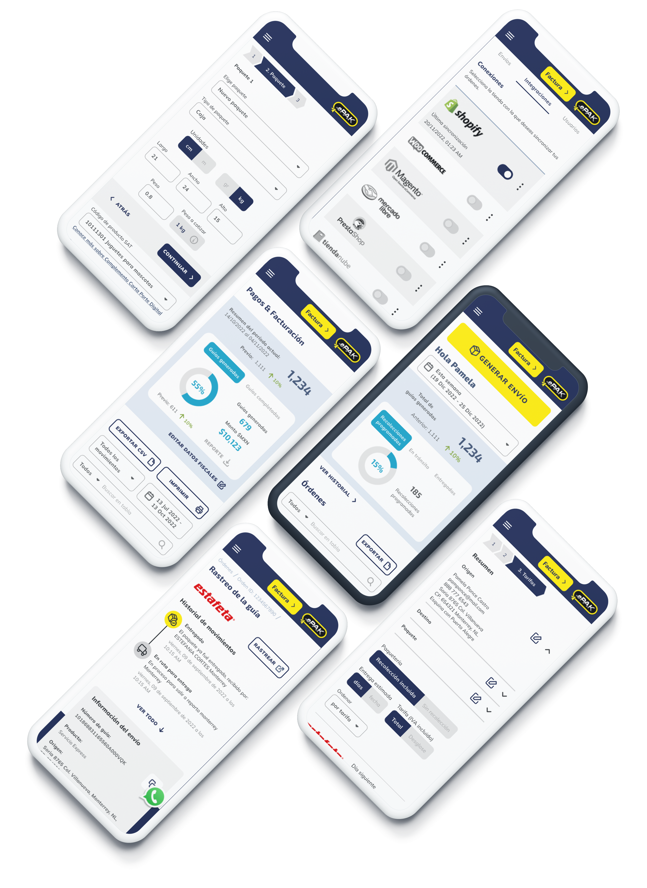

ePAK
B2C Portal Redesign
Background
ePAK, the online platform of the shipping company PAK2GO, was looking to expand its reach and better serve small and medium-sized businesses. The existing portal was hindering this growth due to a difficult-to-use interface, leading to low user satisfaction and a high support ticket volume.
Goal
To design an intuitive and efficient portal that streamlines the user experience and addresses core pain points, setting the foundation for future improvements in user satisfaction and operational efficiency.
My role as Lead UX Designer
I led the end-to-end UX process, from discovery to the delivery of a tested, high-fidelity prototype, including UX strategy, user research, and collaboration with product and engineering teams.
Key deliverables

Evaluating the existing experience
We conducted a competitive benchmark analysis to evaluate ePAK’s user experience against five key industry competitors. The evaluation used a scoring system based on established usability heuristics, HCI principles, and design best practices.
Criteria
- Features & functionality
- Homepage / starting point
- Search
- Control & feedback
- Forms
- Errors
- Content & text
- Help
- Performance
- Mobile application
Key usability challenges
- Form complexity: too many required fields increase friction.
- Poor progress visibility: users lack clear cues in multi-step processes.
- Service discoverability: additional services are difficult to find.

Creating a responsive foundation
Developed a wireframe concept prototype with new navigation and layouts for a responsive experience across desktop and mobile. Following client approval, we advanced to high-fidelity mockups for user testing.


Making the new experience tangible
We created desktop and mobile versions of the prototype to test the new design and align the team around the final interaction model.




Validating the final direction
We conducted usability testing with five ePAK customers to validate the new prototype. Participants responded positively, navigating the redesigned experience without major complications.
The representative sample included 3 Credit Users using the mobile prototype and 2 Prepaid Users using the desktop prototype. They averaged five years of platform experience.
Results
Design rating: 4.8 out of 5
User engagement: 5 days per week and 1–8 hours per week
User expertise: 5 months to 4 years using ePAK

Designing with evidence
Usability evaluations, competitive analysis, wireframes, prototyping, and testing established a clearer, more efficient ePAK experience for both desktop and mobile customers.
